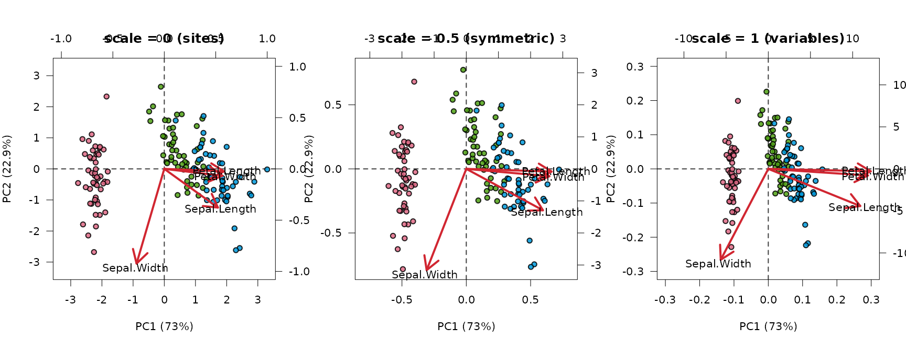
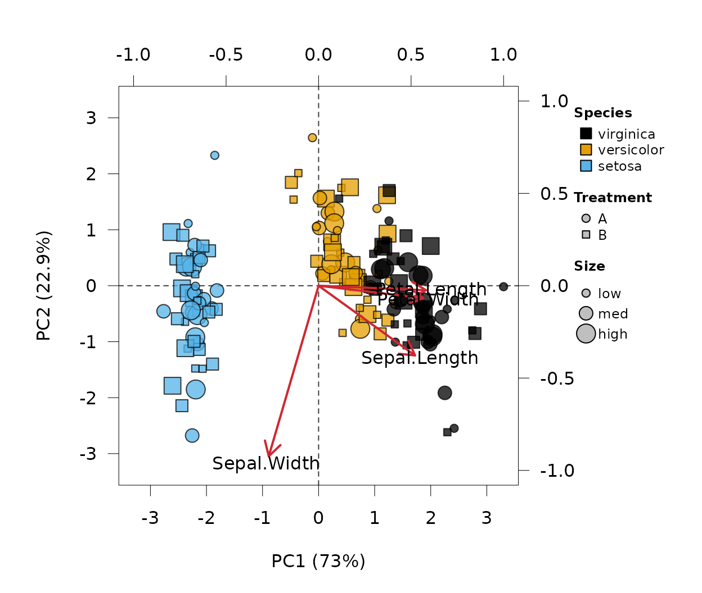
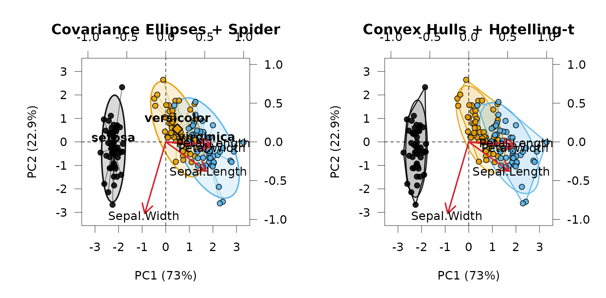
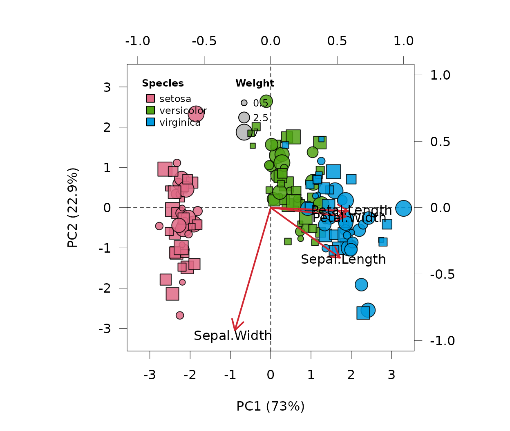
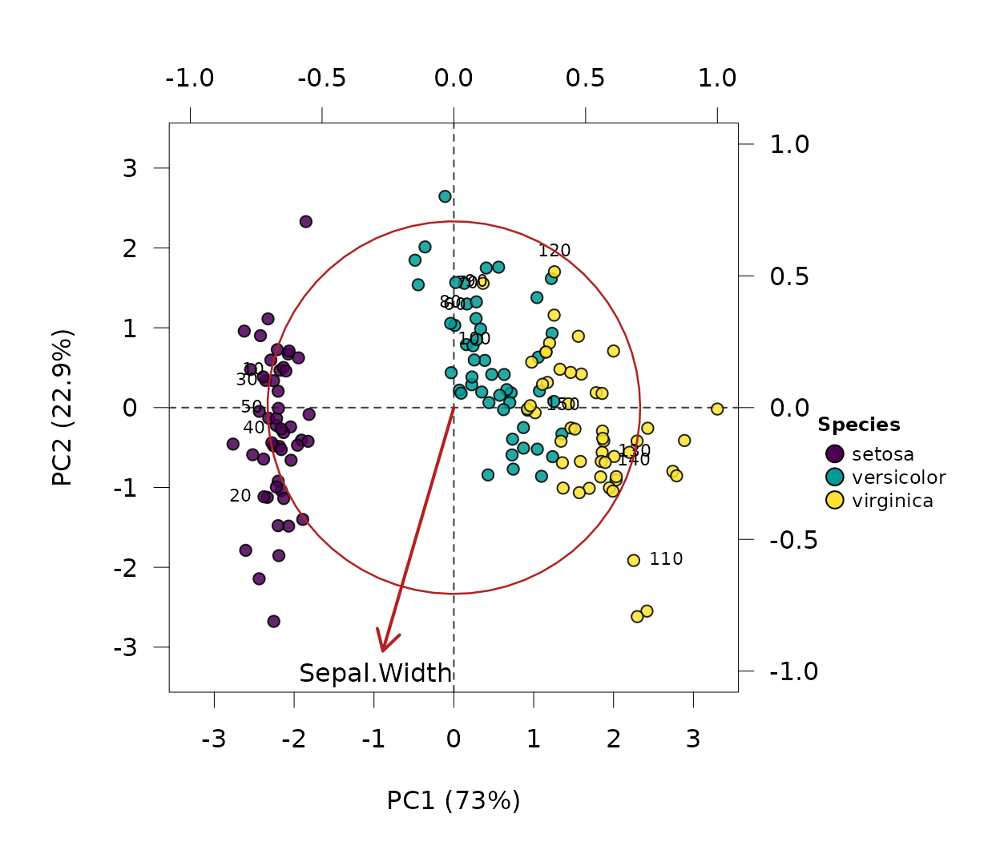
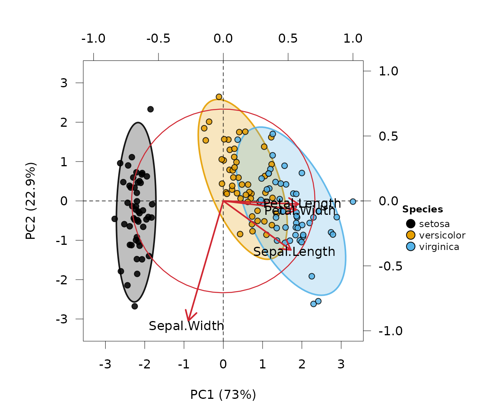
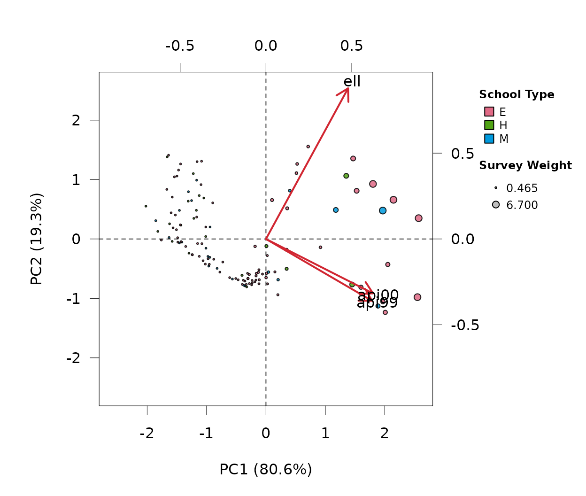
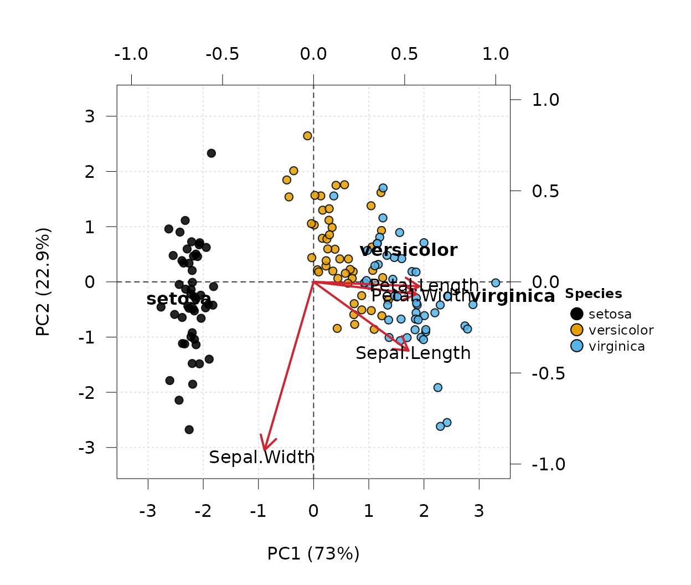

betterbiplot creates customisable Principal Component
Analysis (PCA) biplots using only base R graphics. It works with
prcomp(), princomp(),
vegan::rda(), survey::svyprcomp(),
FactoMineR::PCA(), ade4::dudi.pca(), and
psych::principal() objects, as well as custom score and
loading matrices.
library(betterbiplot)
p <- stats::prcomp(iris[-5], scale. = TRUE)
gr <- factor(iris$Species)1. Quick Start & Biplot Scaling
By default, bb_biplot() matches base R
biplot() scaling (scale = 1, correlation
biplot). Use scale = 0 for a distance biplot (required when
drawing the circle of equilibrium contribution), or
scale = 0.5 for a symmetric biplot:
old_par <- par(mfrow = c(1, 3), mar = c(4, 4, 3, 2))
bb_biplot(p, scale = 0, group = gr, main = "scale = 0 (sites)")
bb_biplot(p, scale = 0.5, group = gr, main = "scale = 0.5 (symmetric)")
bb_biplot(p, scale = 1, group = gr, main = "scale = 1 (variables)")
par(old_par)2. Grouping, Factor Order & Palettes
Up to three grouping factors can be mapped to colour
(group), symbol (group2), and symbol size
(group3). Existing factor levels() are
preserved for both plot styling and legend order, and col
accepts any grDevices::palette.pals() or
grDevices::hcl.pals() palette name (such as
"Okabe-Ito" or "Viridis"):
set.seed(42)
gr_ord <- factor(iris$Species, levels = c("virginica", "versicolor", "setosa"))
gr2 <- factor(sample(c("A", "B"), nrow(iris), replace = TRUE))
gr3 <- factor(sample(c("low", "med", "high"), nrow(iris), replace = TRUE),
levels = c("low", "med", "high"))
bb_biplot(
p, scale = 0,
group = gr_ord, group2 = gr2, group3 = gr3,
col = "Okabe-Ito", alpha = 0.75,
legend = TRUE, leg.args = list(title = c("Species", "Treatment", "Size"))
)
3. Ellipses, Convex Hulls, Centroids & Spider Lines
ellipse = TRUE draws 95% bivariate normal covariance
confidence ellipses (method = "cov") by default, or
small-sample Hotelling’s
ellipses (method = "t"). You can also add convex hulls
(chull = TRUE), group centroids
(centroids = TRUE), and radial spider segments
(spider = TRUE):
old_par <- par(mfrow = c(1, 2))
bb_biplot(
p, scale = 0, group = gr, col = "Okabe-Ito",
ellipse = TRUE, ellipse.args = list(method = "cov", level = 0.95, alpha = 0.15),
centroids = TRUE, spider = TRUE,
main = "Covariance Ellipses + Spider"
)
bb_biplot(
p, scale = 0, group = gr, col = "Okabe-Ito",
chull = TRUE, ellipse = TRUE,
ellipse.args = list(method = "t", level = 0.90, alpha = 0.12, lwd = 1.5),
main = "Convex Hulls + Hotelling-t"
)
par(old_par)4. Selective & Condensed Legends
Use legend with TRUE/"all" or
integer group indices (e.g. legend = c(1, 3) or
legend = 3) to show only specific legends.
group3 legends automatically condense to minimum, middle,
and maximum symbol sizes:
gr3_many <- factor(rep(c(0.5, 1, 2, 2.5, 4, 6, 7), length.out = nrow(iris)))
bb_biplot(
p, scale = 0,
group = gr, group2 = gr2, group3 = gr3_many,
legend = c(1, 3),
leg.args = list(title = c("Species", "Weight"), horiz = TRUE, x = -3.2)
)
5. Variables, Circle of Equilibrium & Label Placement
With scale = 0, circle.eq = TRUE draws the
circle of equilibrium contribution, and
var.args = list(which = "circle.eq", lab.offset = 1.08)
filters to contributing variables and nudges labels past arrowheads. Set
lab.args = list(rotate = TRUE) for radial labels, or
pos = "auto" (default) for deterministic unrotated
observation labels:
bb_biplot(
p, scale = 0, group = gr, col = "Viridis",
circle.eq = TRUE,
var.args = list(which = "circle.eq", lab.offset = 1.1, col = "firebrick"),
labd = ifelse(seq_len(nrow(iris)) %% 10 == 0, rownames(iris), NA),
lab.args = list(pos = "auto", cex = 0.7),
legend = TRUE, leg.args = list(title = "Species")
)
6. Using vegan::rda() and
survey::svyprcomp()
Unconstrained vegan::rda() models are converted to base
R scale (0 to 1):
r <- vegan::rda(iris[-5], scale = TRUE)
bb_biplot(
r, scale = 0, group = gr, col = "Okabe-Ito",
ellipse = TRUE, circle.eq = TRUE,
legend = TRUE, leg.args = list(title = "Species")
)
For survey::svyprcomp() objects (run with
scores = TRUE), passing group3 = "scaled"
sizes points by survey weights and adds a condensed min/median/max
weight legend:
env <- new.env(parent = emptyenv())
utils::data("api", package = "survey", envir = env)
dclus2 <- survey::svydesign(
id = ~dnum + snum,
fpc = ~fpc1 + fpc2,
data = env$apiclus2
)
sp <- survey::svyprcomp(~api99 + api00 + ell, design = dclus2, scale = TRUE, scores = TRUE)
bb_biplot(
sp, scale = 0,
group = factor(env$apiclus2$stype),
group3 = "scaled",
legend = TRUE, leg.args = list(title = c("School Type", "Survey Weight"))
)
7. Extending Biplots (f1/f2 Hooks &
Return Object)
Use f1 / f2 to inject base R drawing calls
before points or arrows, and capture the invisible
"bb_biplot" return object for post-plot annotations
(resetting par(usr = c(bp$lim, bp$lim)) when
variables = TRUE):
bp <- bb_biplot(
p, scale = 0, group = gr, col = "Okabe-Ito",
f1 = function() graphics::grid(col = "grey88", lty = "dotted"),
legend = TRUE, leg.args = list(title = "Species")
)
par(usr = c(bp$lim, bp$lim))
text(bp$centroids, labels = rownames(bp$centroids), font = 2)